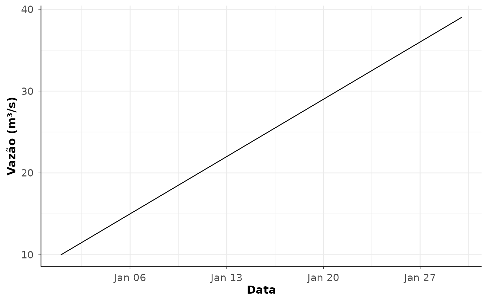
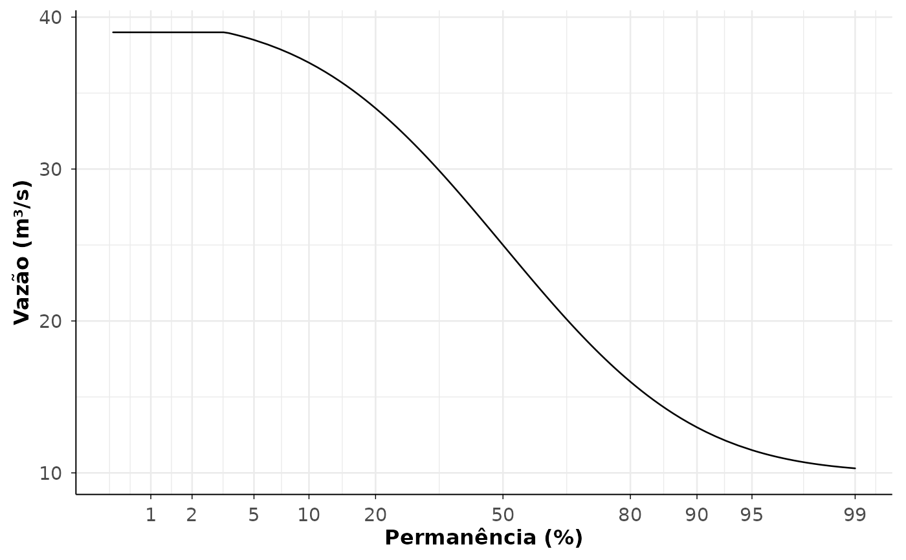

Gera gráficos a partir de séries diárias padronizadas, objetos de aquisição
do hydroDataBR ou resultados de análises. A função reúne os principais
gráficos usados na inspeção de séries, disponibilidade, regime, permanência,
extremos, chuva, medições de descarga, curvas-chave e seções transversais.
Para plot = "hydrometry_diagnostics", séries diárias e objetos agregados
podem ser diagnosticados automaticamente com apoio da base hidrométrica
interna quando referências explícitas não forem fornecidas.
Usage
plot_hydro_data(
data,
plot = c("daily_series", "availability", "monthly_summary", "annual_summary",
"flow_duration", "rating_curves", "rating_validity", "measurements",
"hydrometry_diagnostics", "cross_section_profile", "cross_section_overlay",
"cross_section_timeline", "annual_maxima", "low_flows", "rainfall_indices",
"rainfall_annual_maxima", "rainfall_monthly_boxplot", "rainfall_diagnostics",
"measurement_diagnostics", "rating_diagnostics"),
variable = NULL,
station_code = NULL,
type = NULL,
multi_station = NULL,
max_facets = 12,
...
)Arguments
- data
Objeto de dados. Pode ser uma série diária padronizada, um objeto retornado por
get_ana_data(), um lote retornado porget_ana_data_batch()ou uma tabela/lista de resultados de análise.- plot
Tipo de gráfico. Valores aceitos incluem
"daily_series","availability","monthly_summary","annual_summary","flow_duration","flow_indices","annual_maxima","low_flows","rainfall_indices","rainfall_annual_maxima","rainfall_monthly_boxplot","rainfall_diagnostics","measurements","measurement_diagnostics","rating_curves","rating_validity","rating_diagnostics","hydrometry_diagnostics","cross_section_profile","cross_section_overlay"e"cross_section_timeline".- variable
Variável diária a filtrar, como
"discharge","stage"ou"rainfall".- station_code
Código(s) de estação a filtrar.
- type
Subtipo usado por alguns gráficos, por exemplo em medições de descarga ou diagnósticos.
- multi_station
Estratégia para múltiplas estações:
"facet","list","overlay"ou"error". QuandoNULL, a função escolhe um comportamento adequado ao gráfico.- max_facets
Número máximo de estações em gráficos facetados.
- ...
Argumentos adicionais do gráfico escolhido, como
title,subtitle,log_y,section_id,section_dateoubase_size.
Value
Objeto ggplot. Em alguns casos de múltiplas estações, pode retornar
uma lista nomeada de objetos ggplot.
Examples
daily <- data.frame(
station_code = "001",
date = as.Date("2020-01-01") + 0:29,
variable = "discharge",
value = seq(10, 39),
unit = "m3/s",
consistency_level = NA_integer_,
source_status = NA_character_,
source = "example"
)
plot_hydro_data(daily, plot = "daily_series")

plot_hydro_data(daily, plot = "flow_duration")
#> Warning: Removed 13 rows containing missing values or values outside the scale range
#> (`geom_line()`).
